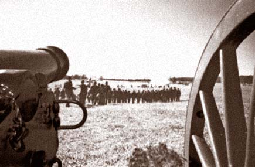

Nash Farm Battlefield (11/2008)
| Previous | | Auto/Stop | | Next |
The reality of 21st Century America was apparent as attendance here was noticably less than at the previous year’s reenactment. Even King’s Battery had to cut back on its traveling due to the summer’s high gas prices (and scarcity of fuel earlier in the fall); Resaca and here at Nash Farm Battlefield were the only venues we attended in 2008. Yet for those who did attend, the Battle of Atlanta reenactment was a welcome respite from modern issues.
In September 2009, Nash Farm will host the 145th Anniversary Battle of Atlanta. For more information, click here: http://www.reenacthistory.com/events/entry/145th-Anniversary-Battle-of-Atlanta